السلسلة 14
السيارة (صنف B) · 40 سؤال بالصوت. حاول تجاوب بوحدك، من بعد شوف الجواب.
السؤال 1
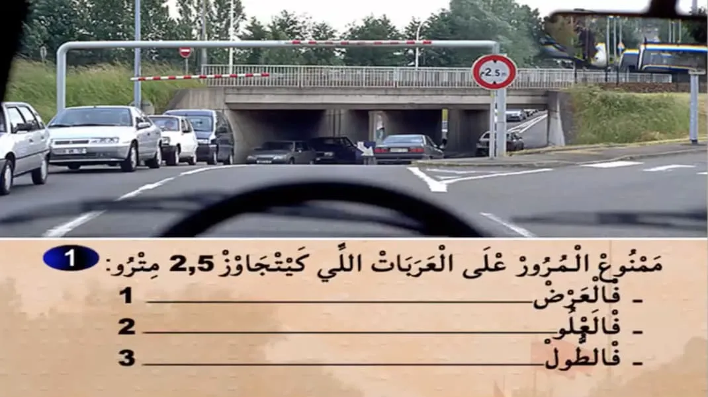
بيّن الجواب
الجواب الصحيح: 2
العلامة الطرقية تعني المنع مع سهمين داخل العلامة، واحد في الأعلى والاخر في الأسفل وهما يشيران إلى العلو، إذن ممنوع على العربات التي علوّها يتجاوز 2,5 من المرور.
السؤال 2
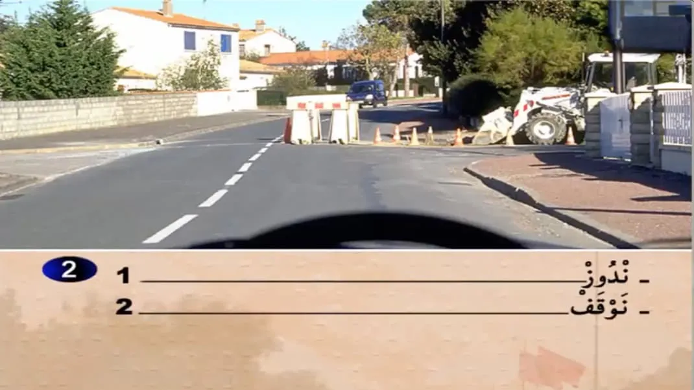
بيّن الجواب
الجواب الصحيح: 2
المسلك العادي للسير الخاص بنا يحتوي على أشغال، بالنسبة للمسلك الاخر فهو خاص بالعربات القادمة في الإتجاه المعاكس، توجد سيارة قادمة إذن يجب عليّ الوقوف وإنتظار مرور العربة القادمة لكي أستطيع المرور.
السؤال 3
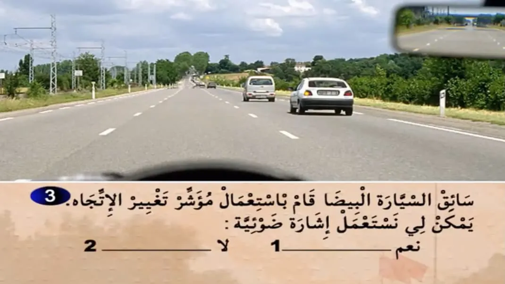
بيّن الجواب
الجواب الصحيح: 1
بالنسبة للسيارة البيضاء تتواجد في مسلك السير العادي، وبالنسبة لي أتواجد في مسلك التجاوز، لكن سائق السيارة البيضاء يريد التجاوز والإندماج في مسلك التجاوز لذلك يجب أن أقوم بتنبيهه لأنني أقوم بتجاوزه.
السؤال 4
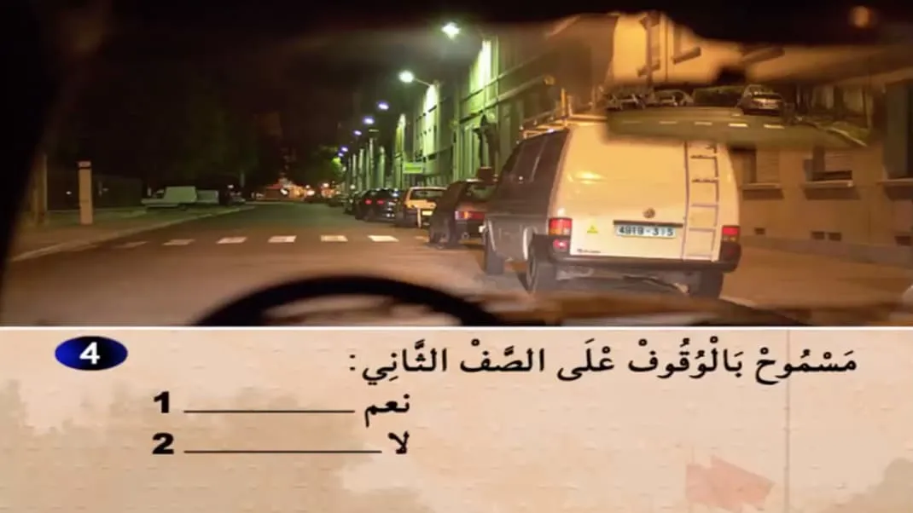
بيّن الجواب
الجواب الصحيح: 1
بالنسبة للوقوف على الصف الثاني أو بما يعرف ب (2ème position) فيمكنني ذلك لإنزال راكب مثلا بدون عرقلة حركة السير، في هذه الحالة الطريق فارغة يمكنني الوقوف.
السؤال 5
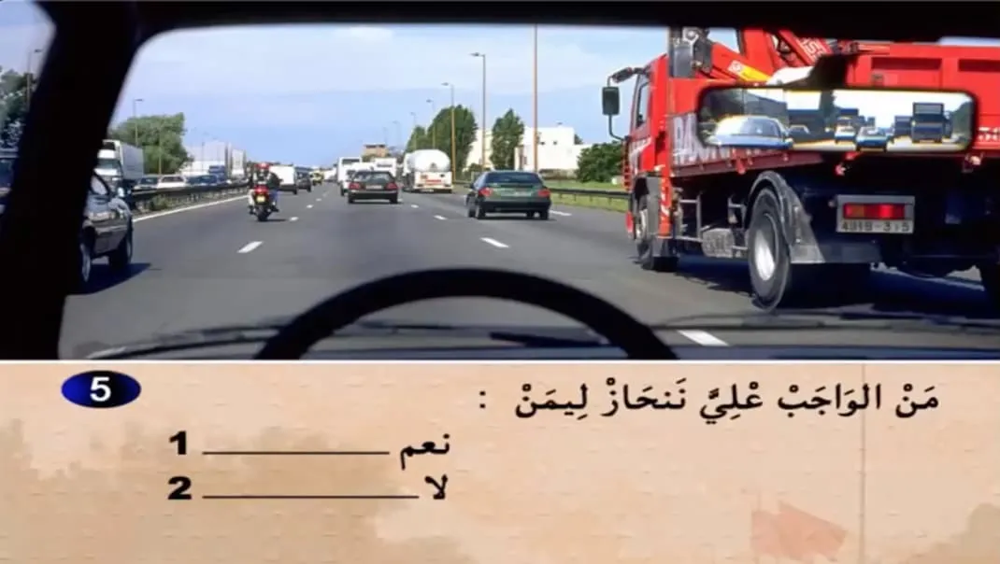
بيّن الجواب
الجواب الصحيح: 2
عند وجود إزدحام في حركة المرور فيجب عليّ البقاء في المسلك الذي أتواجد فيه.
السؤال 6
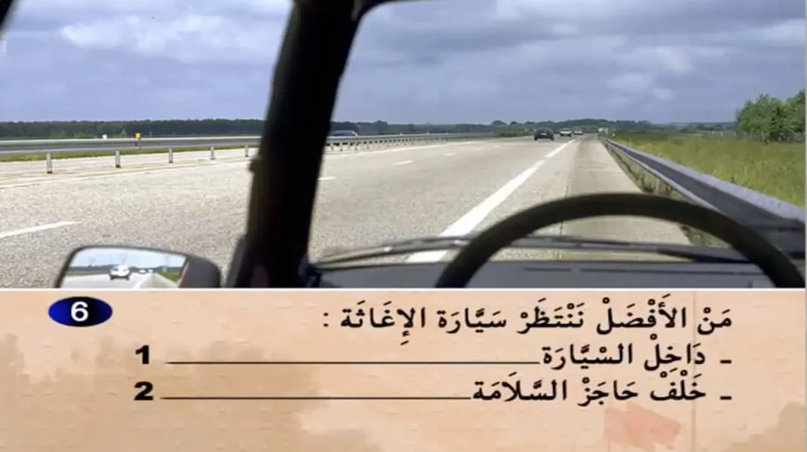
بيّن الجواب
الجواب الصحيح: 2
عند الوقوف في الطريق السيّار مثلا في الحالات الطارئة مثلا عطب في السيارة أو وعكة صحية، فيجب عليّ في هذه الحالة إنتظار سيّارة الإغاثة خلف القضبان أي خلف حاجز السلامة وليس داخل السيّارة.
السؤال 7
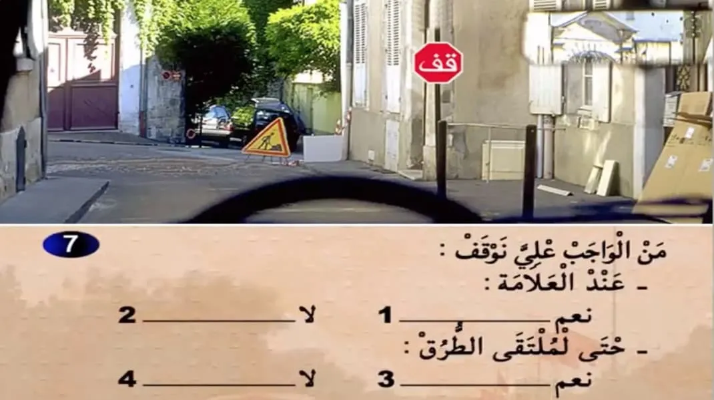
بيّن الجواب
الجواب الصحيح: 2 و 3
بالنسبة لهذه الحالة فيوجد علامة قف، إذا قمت بالوقوف عند العلامة فلن تظهر لي العربات القادمة من اليسار أو اليمين لأن علامة قف تظهر قبل ملتقى الطرق بمسافة، لذلك يجب عليّ الوقوف عند ملتقى الطرق لكي تكون الرؤية واضحة.
السؤال 8
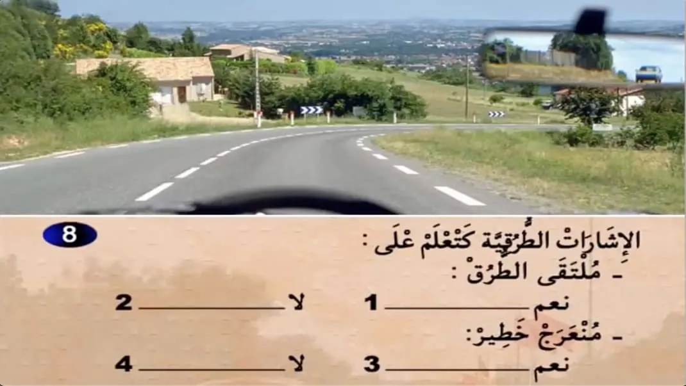
بيّن الجواب
الجواب الصحيح: 2 و 3
بالنسلة للأشارات الطرقية الأرامات فهي تحتوي على لون أحمر وهي تعني في هذه الحالة أنه يوجد منعرج خطير.
السؤال 9
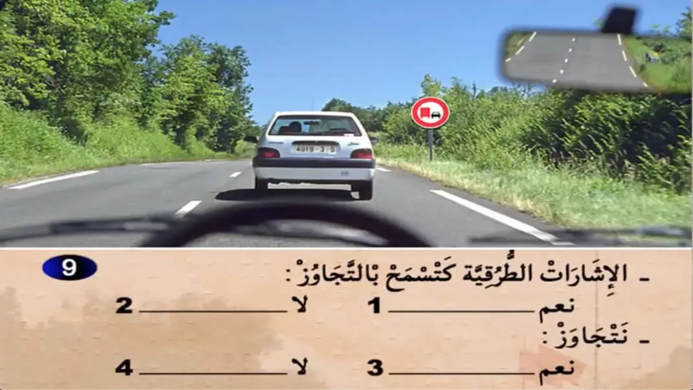
بيّن الجواب
الجواب الصحيح: 1 و 4
التشوير الأفقي الخط المتقطع يسمح لي بالمرور، بالنسبة للعلامة الطرقية العمودية فهي لا تخصّني ولكن تخص الشاحنات، لكن حتى مع السماح لي بالتجاوز لانه يوجد خط متقطع، لكن لا يمكنني التجاوز لأن الرؤية غير واضحة ولا يمكنني مشاهدة السيارات القادمة في الإتجاه المعاكس، لذلك الإجابة 1 و 4.
السؤال 10
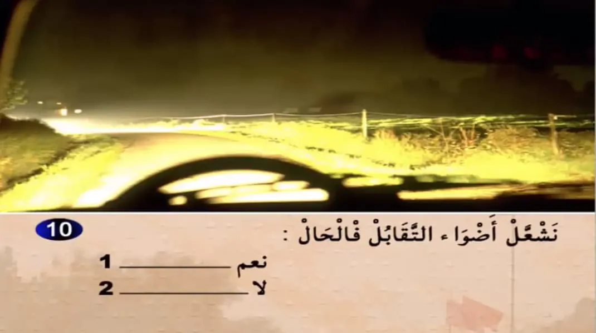
بيّن الجواب
الجواب الصحيح: 1
في هذه الحالة توجد سيارة قادمة، يجب الإنحياز إلى اليمين وتشغيل أضواء التقابل.
السؤال 11
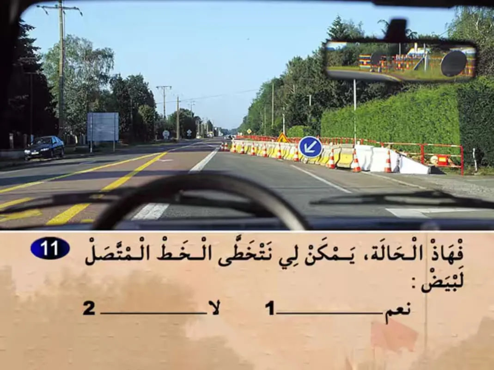
بيّن الجواب
الجواب الصحيح: 1
يوجد أشغال والعلامة الطرقية تجبرني على تغيير المسلك لأن الطريق مقطوعة بسبب الأشغال، لذلك في هذه الحالة يمكنني تخطي الخط المتّصل.
السؤال 12
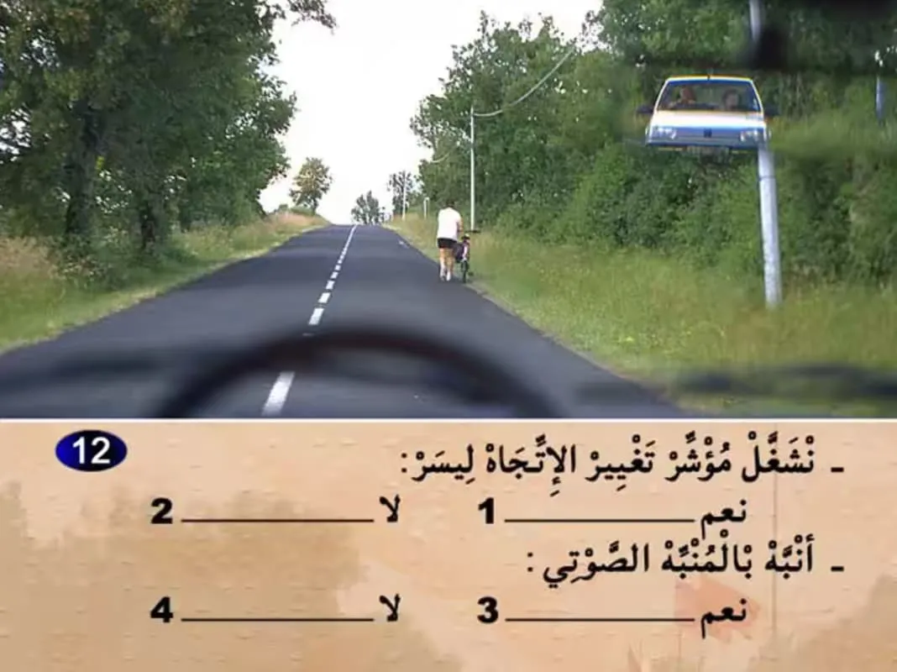
بيّن الجواب
الجواب الصحيح: 1 و 4
أثناء عملية التجاوز أو الإنحياز يجب إستعمال مؤشر تغيير الإتجاه خصوصا عند وجود سيارات موجود خلفي، كما أنه لا يوجد داعي للتنبيه بالمنبه الصوتي لأنه لا يوجد خطر يستوجب التنبيه.
السؤال 13
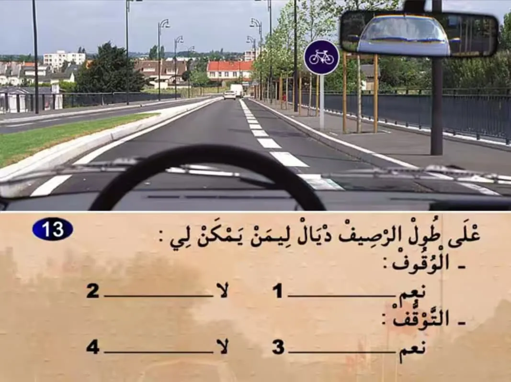
بيّن الجواب
الجواب الصحيح: 2 و 4
بالنسبة للاماكن الخاصة مثلا في هذه الحالة فهو ممر خاص بالدراجات أو مثلا مكان خاص بذوي الإحتياجات الخاصة أو مكان خاص بالحافلات الخ.. فلا يمكن لي الوقوف ولا يمكنني التوقف.
السؤال 14
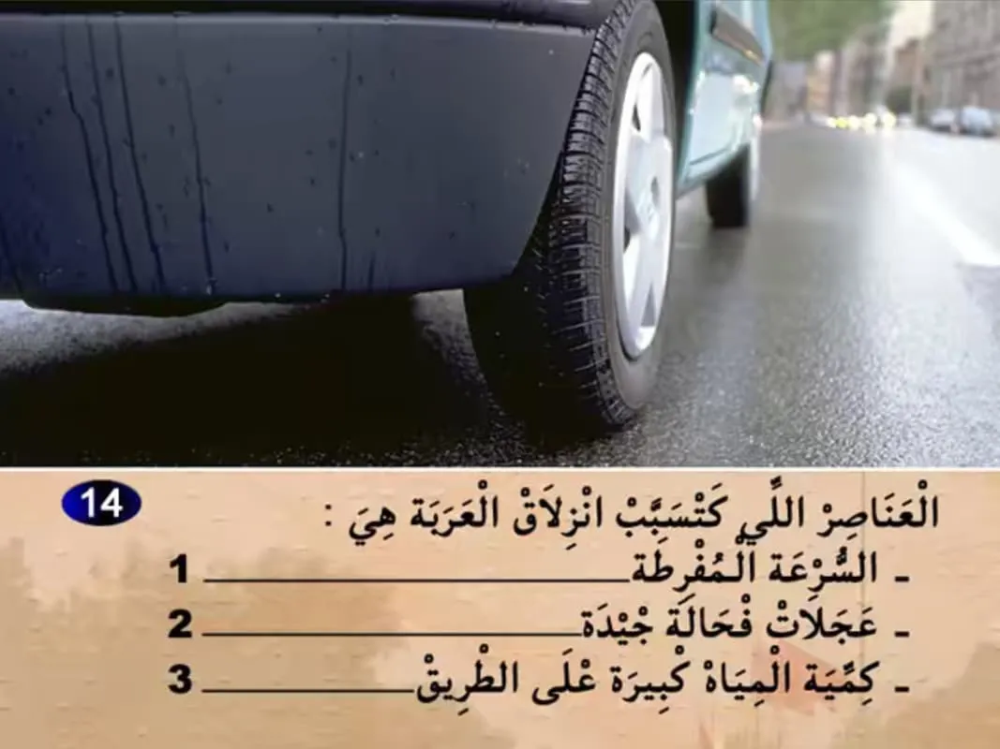
بيّن الجواب
الجواب الصحيح: 1 و 3
بالنسبة للعناصر التي تتسبب في إنزلاق العربة هي: السرعة المفرطة لأنها تتسبب في الإنزلاق، كذلك عند وجود كمية مياه كبيرة في الطريق فتتسبب كذلك في إنزلاق العربة. الإجابة الصحيحة هي الإجابة رقم 1 و 3.
السؤال 15
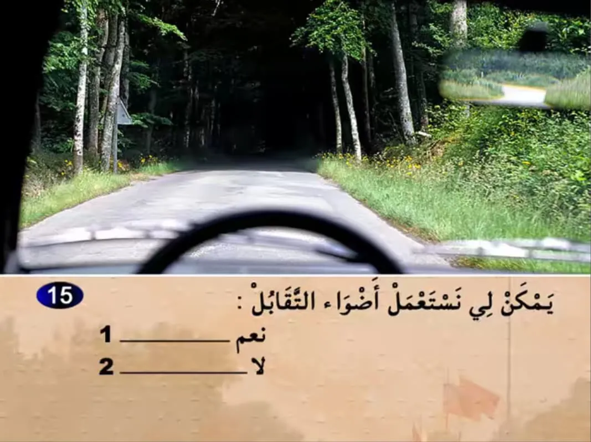
بيّن الجواب
الجواب الصحيح: 1
المكان مظلم ولن تكون الرؤية واضحة بدون أضواء لذلك يمكنني إستعمال أضواء التقابل في هذه الحالة.
السؤال 16
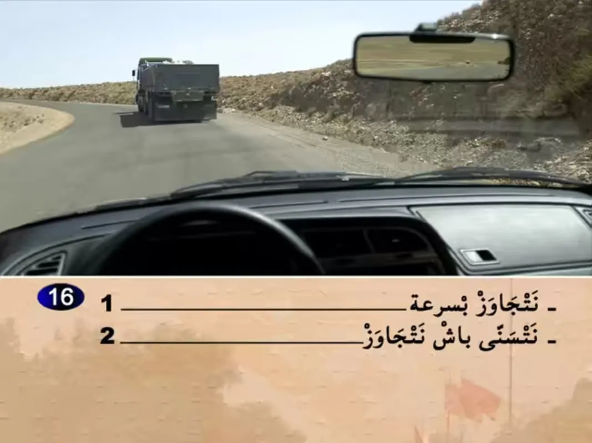
بيّن الجواب
الجواب الصحيح: 2
لا يوجد في قانون السيرالتجاوز بسرعة حتى وإن كانت الطريق تسمح لي بالتجاوز أو أي شيئ، لأنه يوجد شيئ إسمه التجاوز بسرعة المرجو الإنتباه لمثل هذا النوع من الأسئلة، لذلك في هذه الحالة يوجد منعرج لذلك يجب الإنتظار للتجاوز.
السؤال 17
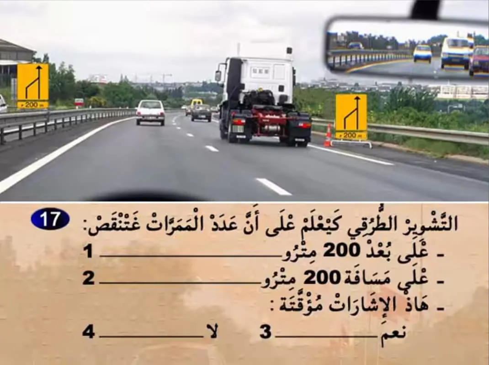
بيّن الجواب
الجواب الصحيح: 1 و 3
بالنسبة للتشوير الطرقي فهو يعلم على أن عدد الممرات او المسالك سوف تنقص على بعد 200 مثل بسبب الأشغال، كما أن الإشارة الطرقية فهي مؤقتة لأنها باللون الأصفر.
السؤال 18
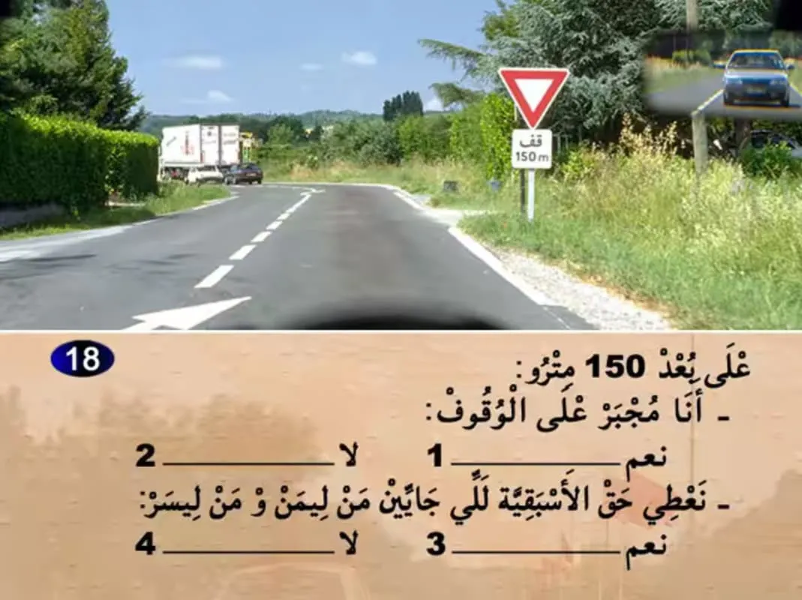
بيّن الجواب
الجواب الصحيح: 1 و 3
علامة الخطر التي تعلن على وجود خطر على بعد 150 متر خارج المدينة وبما أنه يوجد علامة تكميلية تقول أنه يجب علينا الوقوف على بعد 150 متر، إذن أنا مجبر على الوقوف بعد 150 متر وأيظا يجب عليّ إعطاء حق الأسبقية بالنسبة للعربات القادمة من اليمين والعربات القادمة من اليسار.
السؤال 19
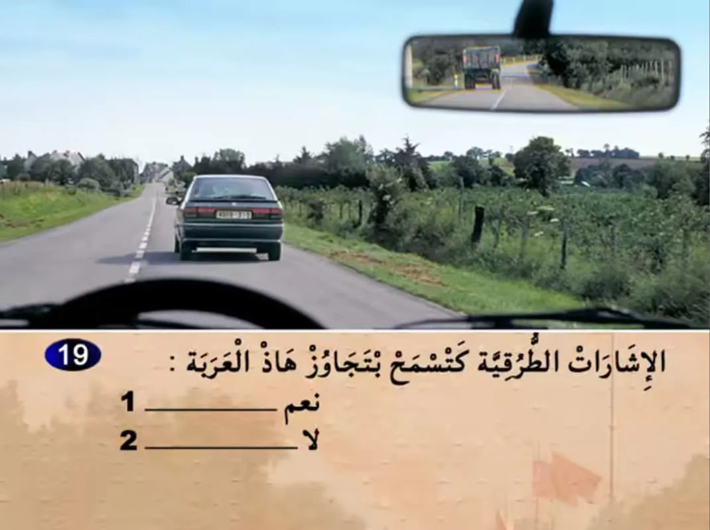
بيّن الجواب
الجواب الصحيح: 2
الإشارات الطرقية الأفقية وهي الخط المتقطع الذي سوف يصبح متّصل، إذن لا يمكن لي تجاوز هذه العربة.
السؤال 20
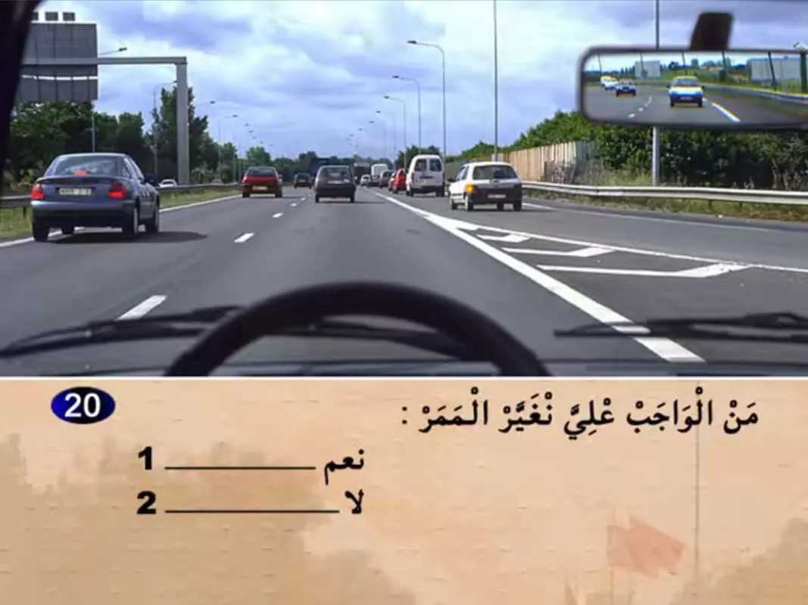
بيّن الجواب
الجواب الصحيح: 2
بالنسبة لهذه الحالة فممكن علي أن أقوم بتغيير الممر، ولكن ليس من الواجب عليّ تغيير الممر لأنني اتواجد في مسلك السير العادي ولا توجد إشارة طرقية تجبرني على تغيير الممر.
السؤال 21
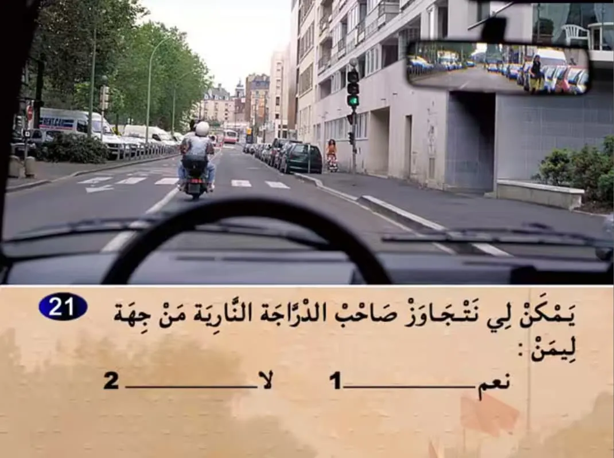
بيّن الجواب
الجواب الصحيح: 2
لا يمكن لي تجاوز صاحب دراجة نارية او عربة من الجهة اليمنى، الحالة الوحيدة التي يمكنني فيها التجاوز من الجهة اليمنى هي عندما يكون صاحب العربة أو مثلا في هذه الحالة سائق الدراجة النارية يريد تغيير الإتجاه إلى اليسار.
السؤال 22
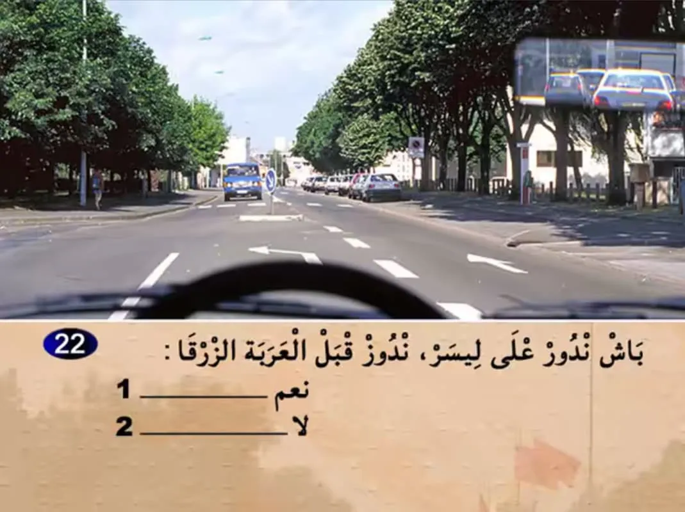
بيّن الجواب
الجواب الصحيح: 2
بالنسبة لهذه الحالة فالأسبقية للسيارات القادمة من اليمين، إذا كنت أريد الإنعطاف إلى اليسار فالسيارة الزرقاء سوف تتواجد على يميني، إذن سوف أسمح لها بالمرور أولا وبعد ذلك أقوم بلإنعطاء الى اليسار.
السؤال 23
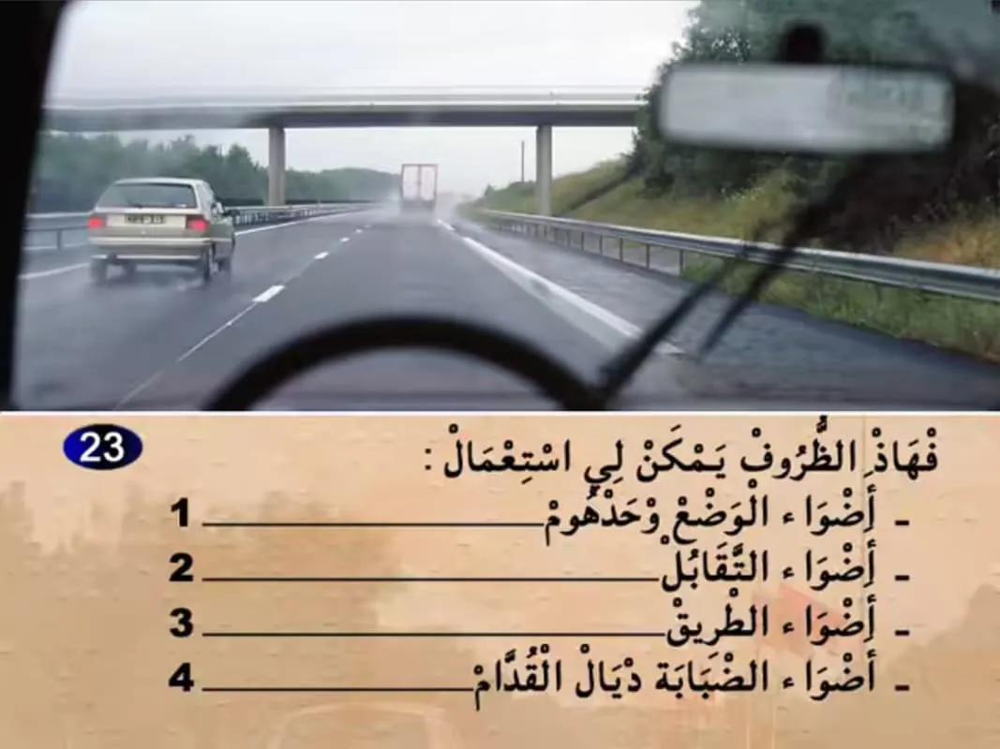
بيّن الجواب
الجواب الصحيح: 2 و 4
أثناء هطول الأمطار، نقوم بالسّير بإستعمال أضواء التّقابل وأضواء الضباب الأمامية، بالاضافة لإمكانية إستعمال أضواء الوضع مع أضواء التقابل او الضبابة، لا يمكن إختيار الإختيار الأول أضواء الوضع وحدهم لانه لا يمكننا السير بأضواء الوضع وحدهم، من الواجب في مثل هذه الحالات مثل المطر ان نقوم بإستعمال أضواء الوضع مع أضواء التقابل إذا كنا نريد إستعمال أضواء الوضع، ولا يمكن إستعمال أضواء الوضع وحدهم والسير بهم في مثل هكذا أجواء ممطرة (لو كان الإختيار أضواء الوضع، بدون كلمة وحدهم فيمكننا إختيارهم) .
⚠️ ملاحظة: يمكن استعمال أضواء الوضع في آن واحد مع أضواء الطريق وأضواء التقابل والأضواء الخاصة بالضباب، ويمكن كذلك استعمالها وحدها عند وقوف المركبة أو توقفها أو عندما تكون ظروف الإنارة على الطرق، ماعدا الطريق السيار أو الطرق ذات المسالك الخاصة. الجواب الصحيح هو رقم 2 و 4.
السؤال 24
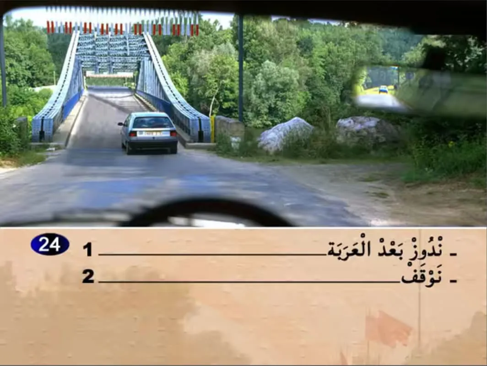
بيّن الجواب
الجواب الصحيح: 1
لا يوجد عربة قادمة في الإتجاه المعاكس وتتواجد داخل القنطرة، لذلك يمكنني المرور بعد العربة. (القاعدة في هذه الحالة تقول العربة التي تكون داخل القنطرة أولا لديها حق الأسبقية في المرور).
السؤال 25
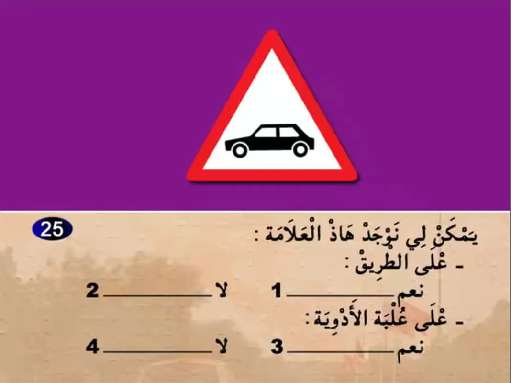
بيّن الجواب
الجواب الصحيح: 2 و 3
هذه العلامة الطرقية يمكنني إيجادها في علب الأدوية وليس على الطريق، كما أنه عند وجودها على الأدوية فهي تعني أنه ممنوع علينا قيادة السيارة ونحن نتناول هذا الدواء.
السؤال 26
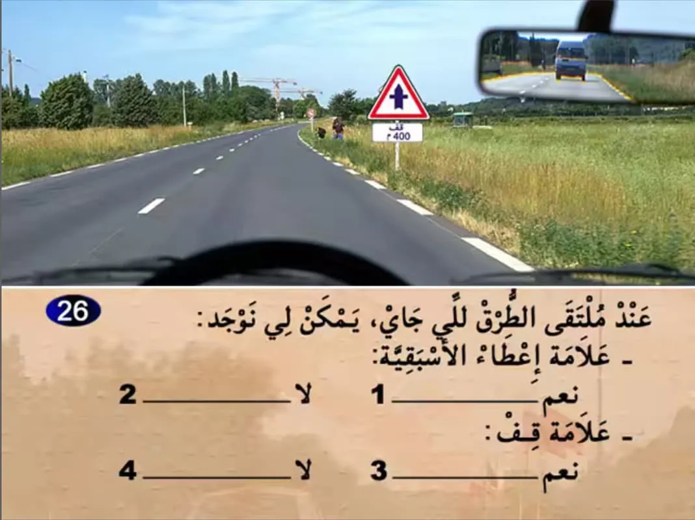
بيّن الجواب
الجواب الصحيح: 2 و 3
عند ملتقى الطرق القادم سوف أجب علامة لديّ حق الأسبقية كما تشير إليه العلامة الطرقية، كما أنني سوف أجد علامة قف بعد 400 متر كما توضّح العلامة التكميلية الوجودة تحت العلامة لدّي حق الأسبقية.
السؤال 27
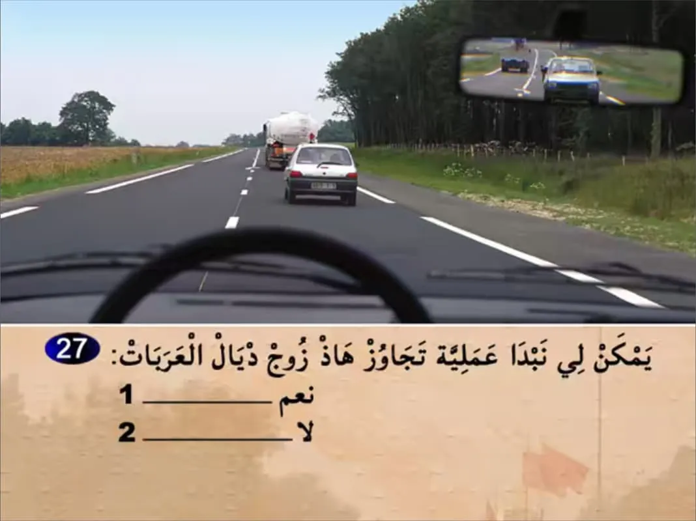
بيّن الجواب
الجواب الصحيح: 2
الطريق ذات إتجاهين يعني ممكن أن أجد سيارة قادمة في الإتجاه المعاكس، وعندما تكون الطريق ذات إتجاهين في هذه الحالة لا يمكن لي أن أقوم بتجاوز عربتين في نفس الوقت. كما أن يوجد أسهم الإنحياز والتي تمنعني من عملية التجاوز.
السؤال 28
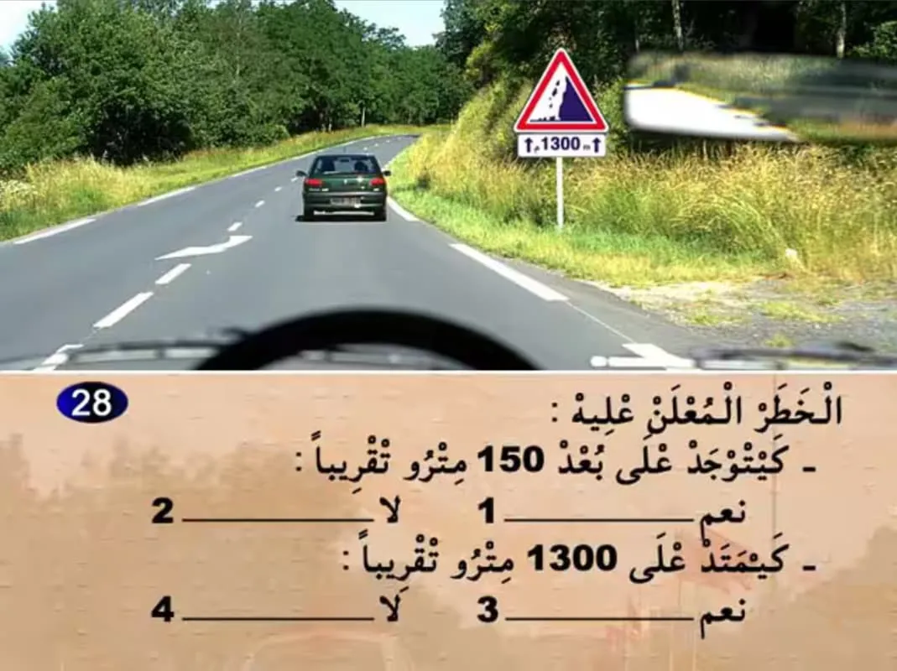
بيّن الجواب
الجواب الصحيح: 1 و 3
العلامات الطرقية الخاصة بالخطر خارج المجال الحضري فهي تكون على بعد 150 متر، غذن بعد 150 متر سوف أجد خطر تساقط الأحجار، أيظا يوجد علامة تكميلية فيها سهمان يشيران على إمتداد 1300 متر. الإجابة الصحيحة هي: 1 و 3.
السؤال 29
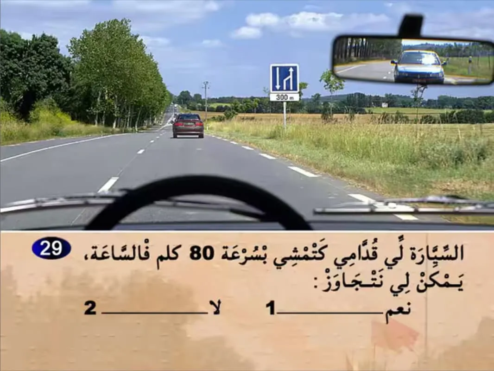
بيّن الجواب
الجواب الصحيح: 2
الطريق وطنية ويمكنني السير بسرعة قصوى 100 كلم في الساعة، وبما أن السيارة تسير بسرعة 80 كلم في الساعة فيمكنني تجاوزها. لكن يوجد علامة طرقية عمودية تشير الى تقلّص المسالك الخاص بالسّير على بعد 300 متر، في هذه الحالة لا يمكنني التجاوز.
السؤال 30
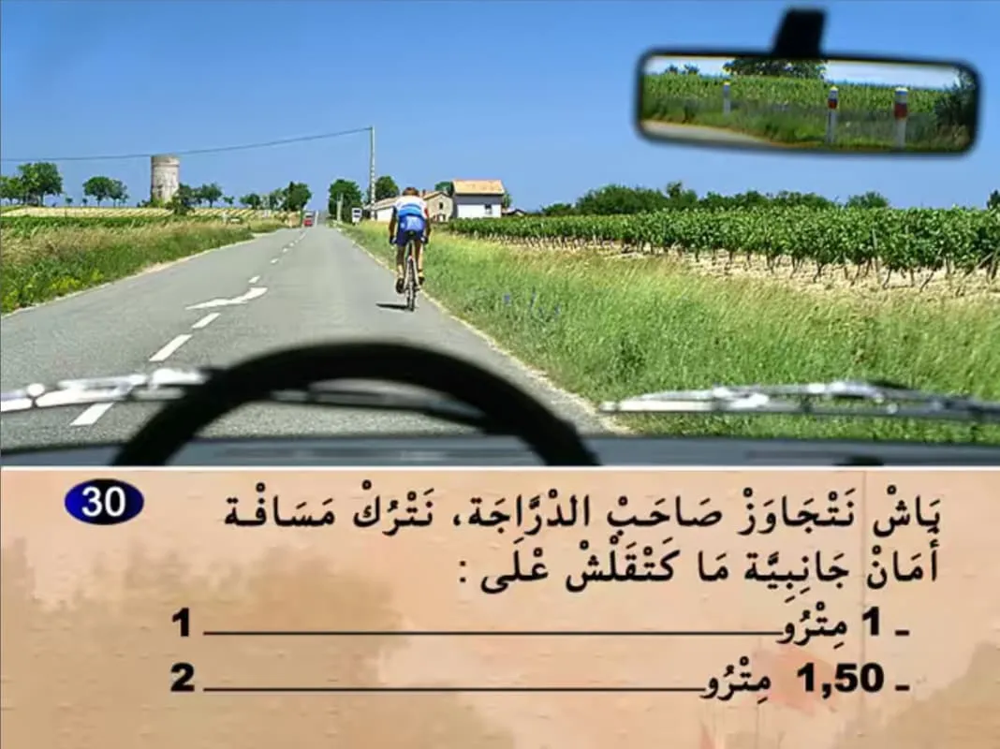
بيّن الجواب
الجواب الصحيح: 1
بالنسبة لتجاوز مجموعة من الأشخاص أو دراجة نارية أو هوائية كما في الصورة فدائما خارج المجال الحضري يجب عليّ ترك مسافة أمان جانبية لا تقل على متر ونصف عند التجاوز.
السؤال 31
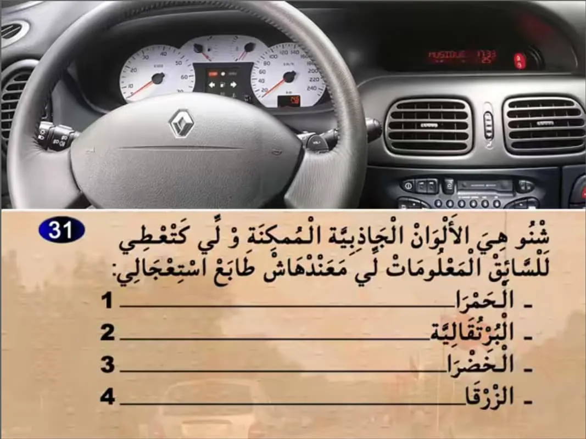
بيّن الجواب
الجواب الصحيح: 2 و 3 و 4
بالنسبة للألوان الجاذبية الممكنة والتي تعطي للسائق معلومات ليست لها طابع إستعجالي فهي الألوان: البرتقالية والخضراء والزرقاء، بالنسبة للّون الأحمر فهو يشير إلى الخطر.
السؤال 32
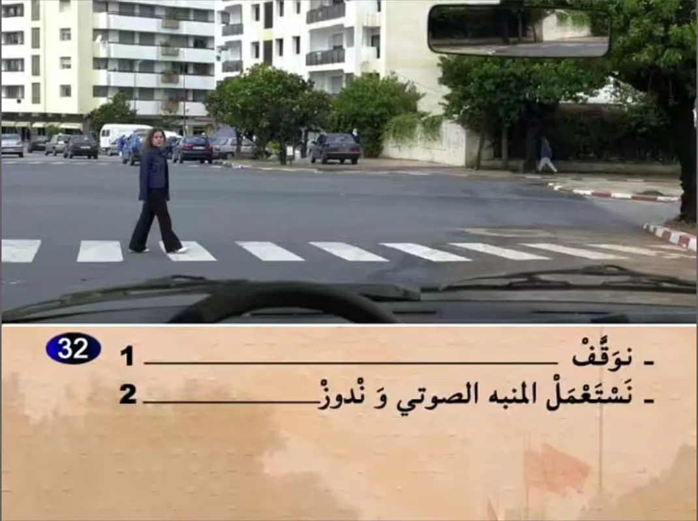
بيّن الجواب
الجواب الصحيح: 1
بالنسبة للراجلين عندما يندمجون في ممر الراجلين الخاص بهم فيجب عليّ الوقوف والسماح لهم بالمرور أولا. كما أن المنبّه الصوتي ممنوع داخل المدينة إلا في حالة وجود خطر.
السؤال 33
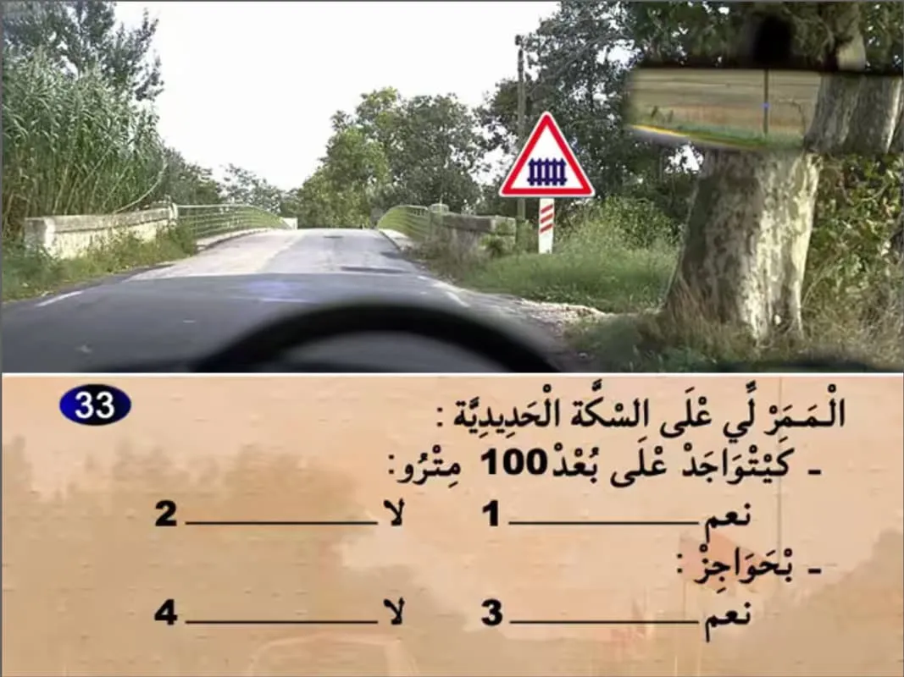
بيّن الجواب
الجواب الصحيح: 2 و 3
المرجو الإنتباه، بالنسبة لتلك الخطوط أسفل علامة الخطر فهي تعني المسافة، كل خط يساوي 50 متر، بما أنه لدينا 3 خطوط إذن 150متر. العلامة الطرقية تعني وجود السكة الحديدية بحواجز على بعد 150 متر.
السؤال 34
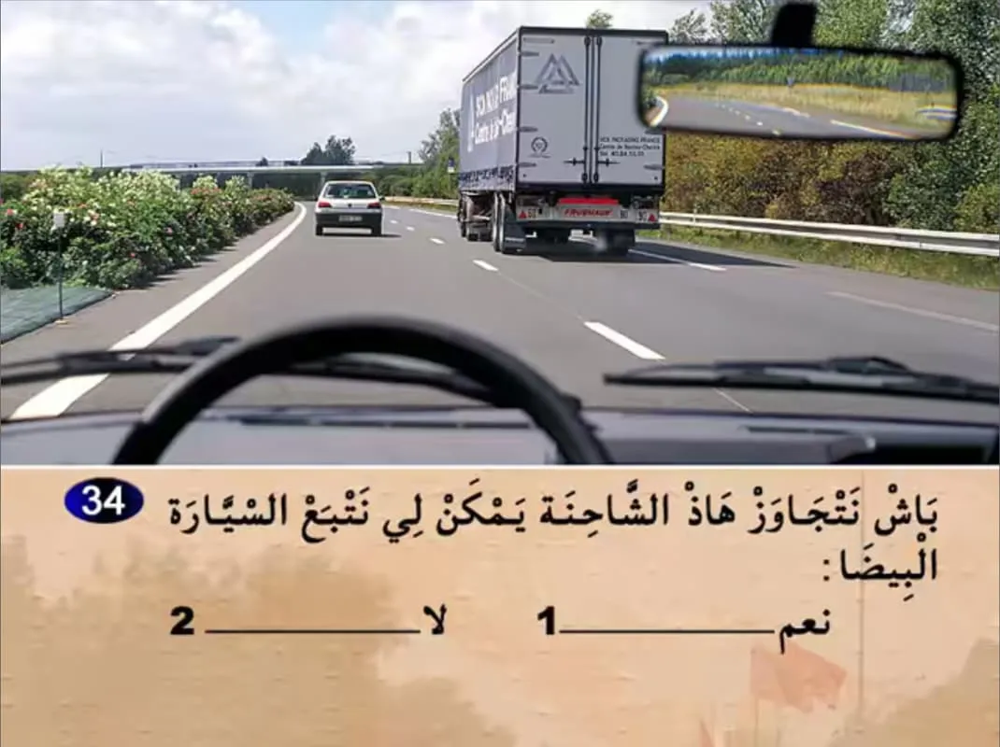
بيّن الجواب
الجواب الصحيح: 1
نتواجد في طريق ذات إتجاه واحد (الخط المتصل على اليسار) في هذه الحالة عندما تكون الطريق ذات إتّجاه واحد فيمكنني تجاوز الشاحنة بالرغم من أن سيارة أخرى تتجاوزها.
السؤال 35
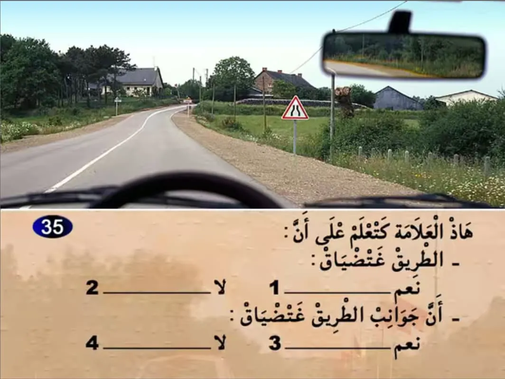
بيّن الجواب
الجواب الصحيح: 1 و 4
العلامة الطرقية تعني الخطر على بعد 150 متر، وهي تعني أن الطريق سوف تضياق. وليس هنالك علامة تدّل على أن جوان الطريق سوف تضياق.
السؤال 36
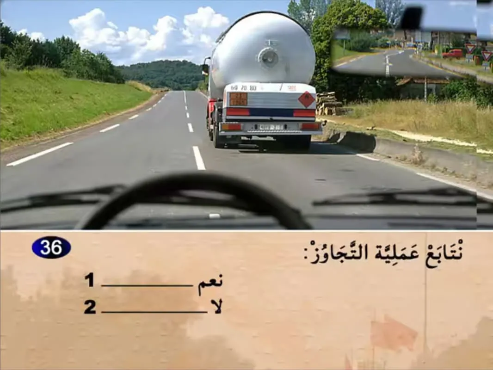
بيّن الجواب
الجواب الصحيح: 2
لا يمكنني في هذه الحالة إكمال عملية التجاوز لأنه لا يمكنني الرؤية بوضوح (إنعدام الرؤية)، كما أنه في المراة العاكسة توجد أسهم الإنحياز وهي تعني يجب أن أنحاز إلى مسلك السير العادي.
السؤال 37
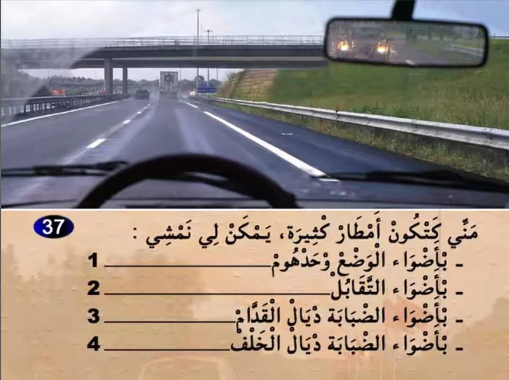
بيّن الجواب
الجواب الصحيح: 2 و 3
أثناء هطول الأمطار، نقوم بالسّير بإستعمال أضواء التّقابل وأضواء الضباب الأمامية، بالاضافة لإمكانية إستعمال أضواء الوضع مع أضواء التقابل او الضبابة، لا يمكن إختيار الإختيار الأول أضواء الوضع وحدهم لانه لا يمكننا السير بأضواء الوضع وحدهم، من الواجب في مثل هذه الحالات مثل المطر ان نقوم بإستعمال أضواء الوضع مع أضواء التقابل إذا كنا نريد إستعمال أضواء الوضع، ولا يمكن إستعمال أضواء الوضع وحدهم والسير بهم في مثل هكذا أجواء ممطرة (لو كان الإختيار أضواء الوضع، بدون كلمة وحدهم فيمكننا إختيارهم) .
⚠️ ملاحظة: يمكن استعمال أضواء الوضع في آن واحد مع أضواء الطريق وأضواء التقابل والأضواء الخاصة بالضباب، ويمكن كذلك استعمالها وحدها عند وقوف المركبة أو توقفها أو عندما تكون ظروف الإنارة على الطرق، ماعدا الطريق السيار أو الطرق ذات المسالك الخاصة. الجواب الصحيح هو رقم 2 و 3.
السؤال 38
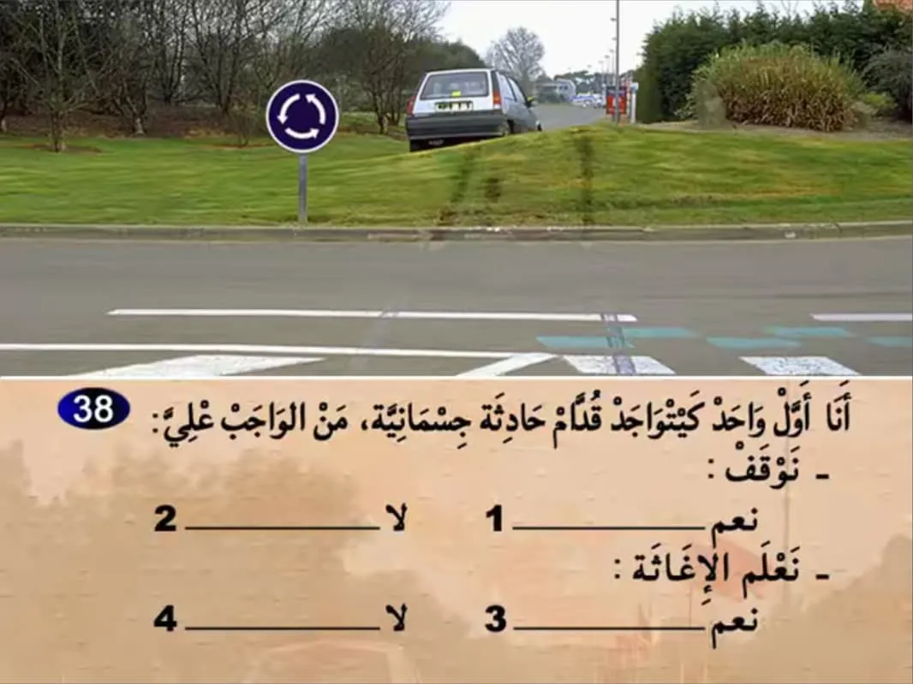
بيّن الجواب
الجواب الصحيح: 1 و 3
عندما أكون أول واحد في مكان الحادث فيجب عليّ التوقف وحماية مكان الحادث والإتصال بالإغاثة ونقدم مساعدة إذا إقتضى الأمر ذلك.
السؤال 39
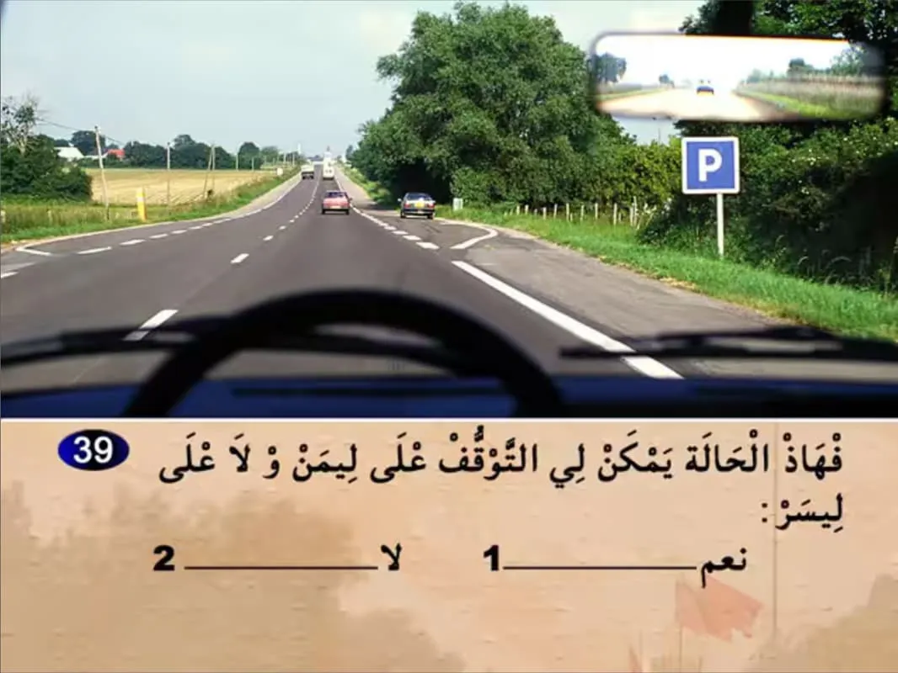
بيّن الجواب
الجواب الصحيح: 2
توجد إشارة طرقية تعلمنا أنها يمكننا التوقف على الجهة اليمنى، ولا يمكنني التوقف على الجهة اليسرى لأن الطريق ذات إتجاهين.
السؤال 40
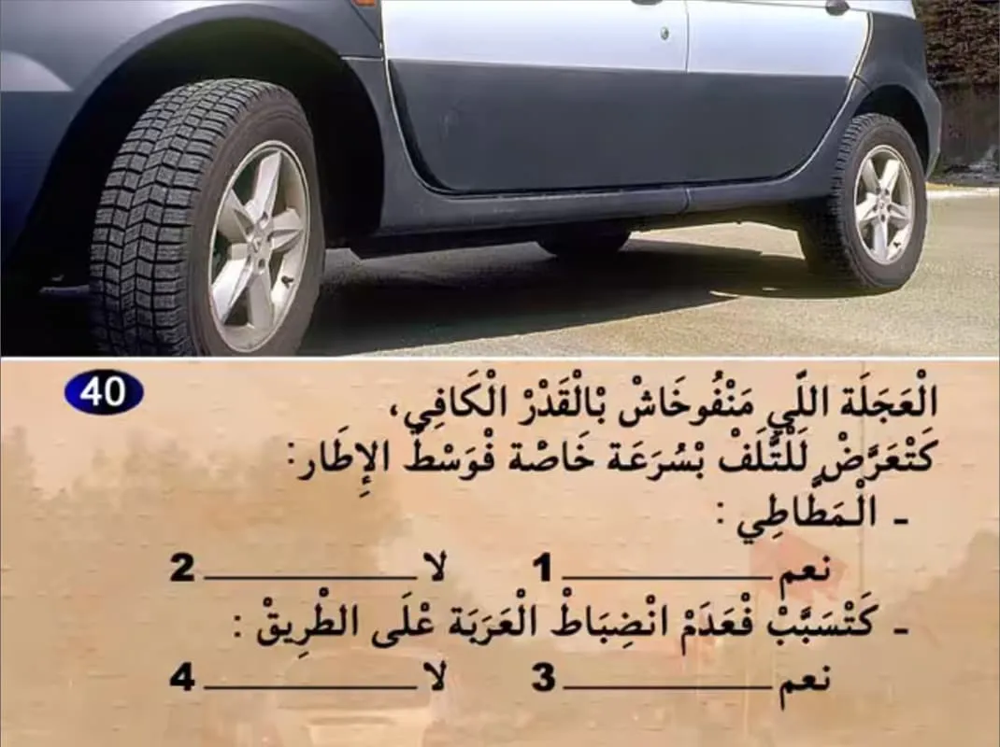
بيّن الجواب
الجواب الصحيح: 2 و 3
بطبيعة الحال العجلة عندما تكون غير مضغوطة بالهواء بشكل جيد فإنها لا تتعرض للتلف بسرعة، لكن من جهة أخرى عندما تكون العجلة غير مضغوطة بشكل جيد بالهواء فإنها تتسبب في عدم إنضباط العربة على الطريق ويكون هنالك مثل الإرتجاج.